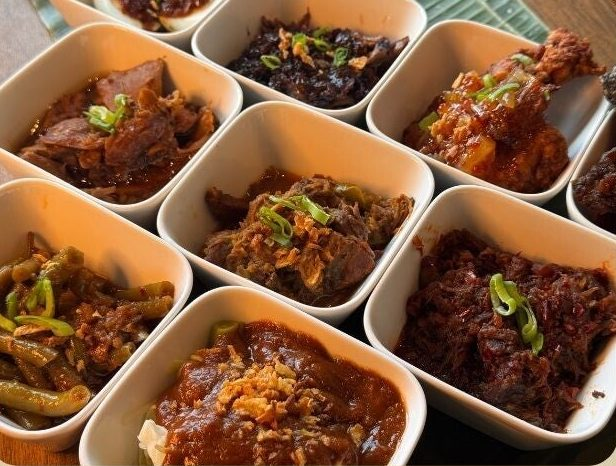
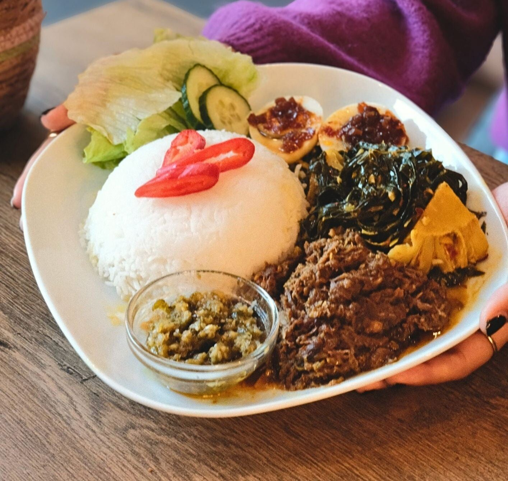
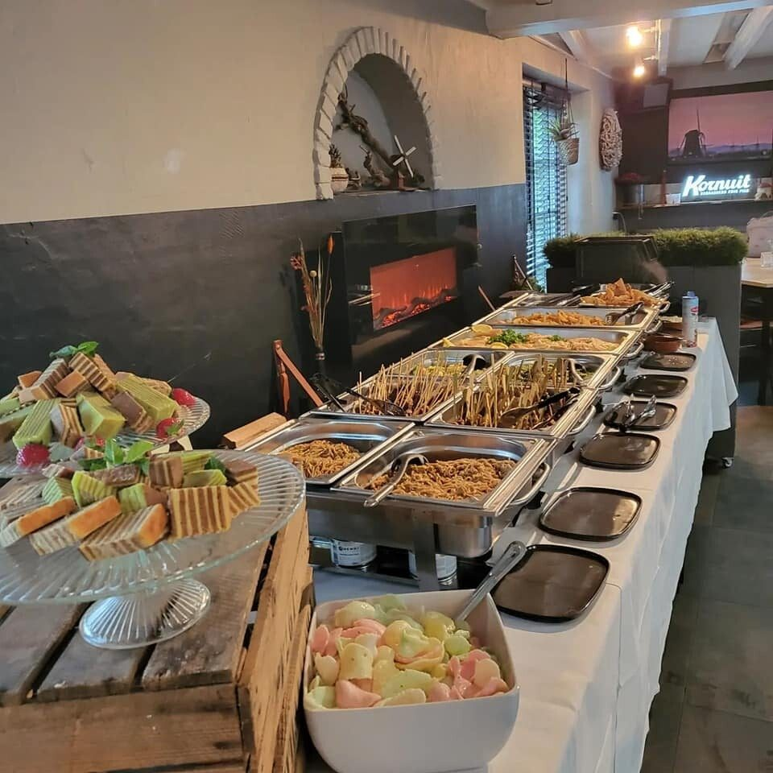
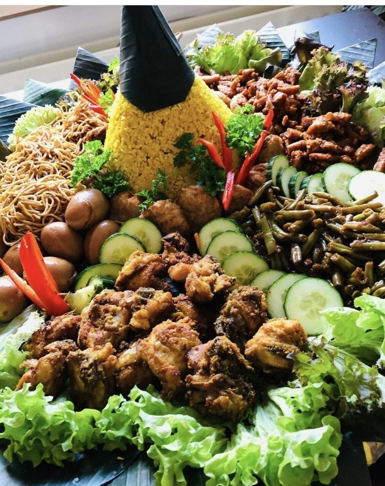
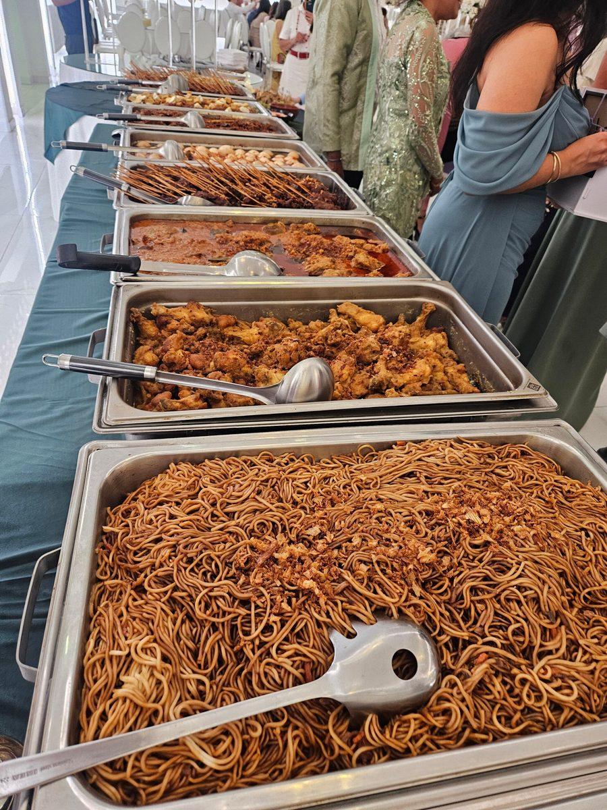
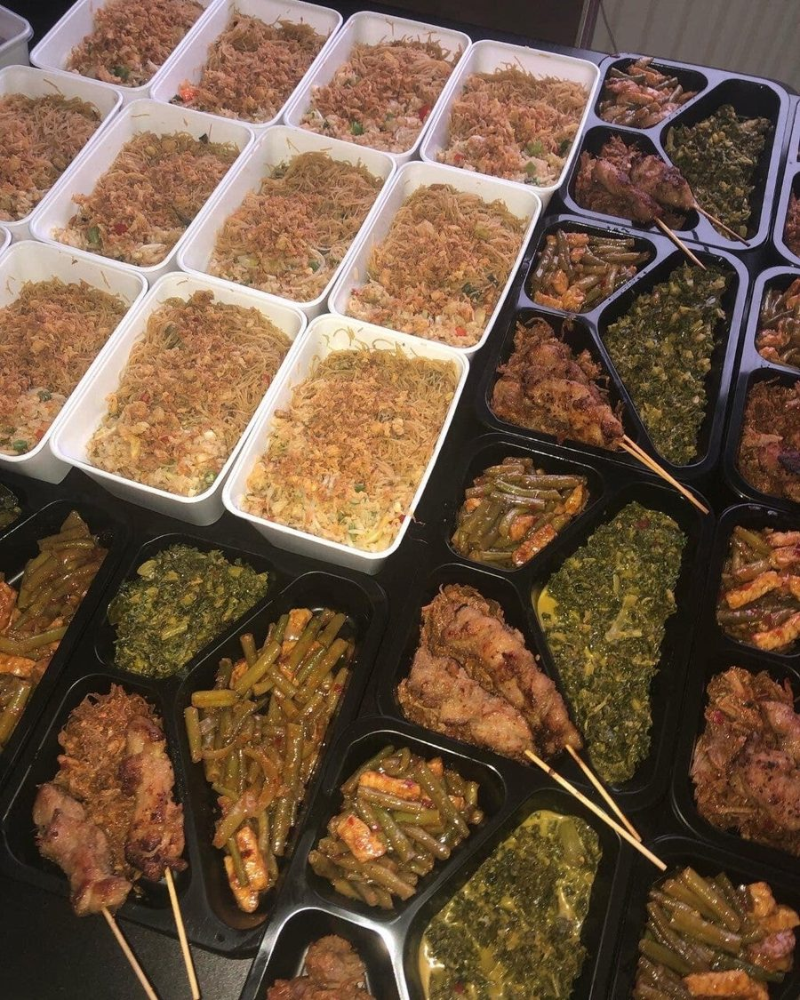
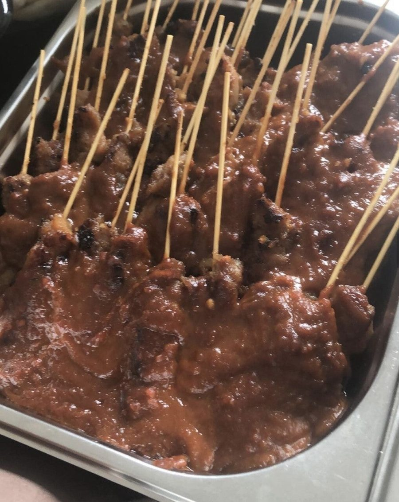
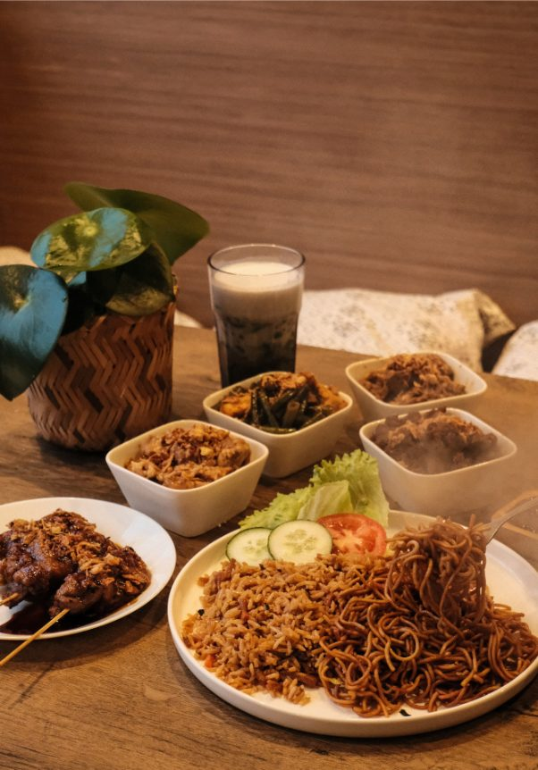

Rijsttafel Gadjah
Ontdek onze traditionele keuken. Geserveerd op een warmhoudplaat, vanaf 2 personen.
vanaf € 23,50 p.p.Meer info

Traditionele recepten, vers bereid met kruiden en specerijen uit Indonesië. Eet bij ons, haal af of laat ons de catering verzorgen.
Zo lekker gegeten! Hier eet je ècht indonesisch. Klein restaurantje maar gezellig en heel vriendelijke bediening.Robbert, in ons gastenboek
Een feest of een lunch met collega's? Gadjah verzorgt de catering helemaal, afgestemd op uw wensen. Van een rijsttafel voor een paar personen tot een compleet buffet.
We koken volgens traditionele Indische recepten en technieken die van generatie op generatie zijn doorgegeven. De basisingrediënten komen uit Indonesië.
Vandaag hebben de collega's en wijzelf enorm mogen genieten van de smaak van de sate's met pindasaus en lontong. De zelf gemaakte sambal overtrof mijn smaak pupillen.Mike & Helma, over onze catering





Onze satésaus maken we volgens traditioneel Indisch recept, met een uitgebalanceerde combinatie van Aziatische kruiden en specerijen. Pinda's van hoge kwaliteit geven de saus zijn rijke, volle smaak.
De saus is er voor thuis, maar ook voor restaurants: hij past bij allerlei gerechten en snacks.
In één woord: heerlijk! Echt genoten van alle lekkere gerechten. Het was vers, mals en perfect op smaak. De ontzettend vriendelijke mensen geven je een welkom gevoel, ook zeker niet onbelangrijk. Zeker de moeite waard, wij komen vaker terug!
ElineIk heb hier afgelopen vrijdagavond met mijn dochter en schoonzoon werkelijk heerlijk gegeten! Alles was even smakelijk en ook de bediening was uitermate vriendelijk. Een echte aanrader dus aan ieder ander en ze zien me daar zeker weer terug.
Frans van SchaijikWat hebben wij lekker gegeten! Ik had saté en mijn man had de daging smoor, smaakte alletwee top!! Goede portie ook. Gaan hier zeker vaker eten halen!!
JokeGisteren met mijn 2 vrienden hier gegeten, was weer erg lekker, je proeft gewoon dat alles met verse ingrediënten gemaakt wordt, tussen haakjes, de tjendol was weer geweldig
GerryHeerlijk gegeten, lekker sate & martabak vooraf met heerlijk nasi rames en pittige pepesan makreel. Leuke en attente bediening.
Jan WitkampIk heb gisteren bij jullie een rijsttafel Besar besteld en na mijn cursus in Breda meegenomen naar Eindhoven. We hebben heerlijk gesmuld. Nogmaals bedankt.
Syl DavansUit het gastenboek op gadjah.nl

Ayo makan!Laten we eten!
Bij Gadjah koken we Indonesisch zoals het hoort: met recepten en technieken die van generatie op generatie zijn doorgegeven, en met liefde bereid. Alle ingrediënten selecteren we met zorg; de basisingrediënten komen uit Indonesië.
Kom bij ons eten aan de Oranjeboomstraat, haal uw eten af of laat ons de catering verzorgen.
Bel of app ons om eten af te halen, een tafel te reserveren of catering te bespreken.
Komt u met een groep, of wilt u reserveren als we gesloten zijn? Bel dan het liefst een paar dagen van tevoren.
Heeft u een allergie? Meld het ons bij uw bestelling.